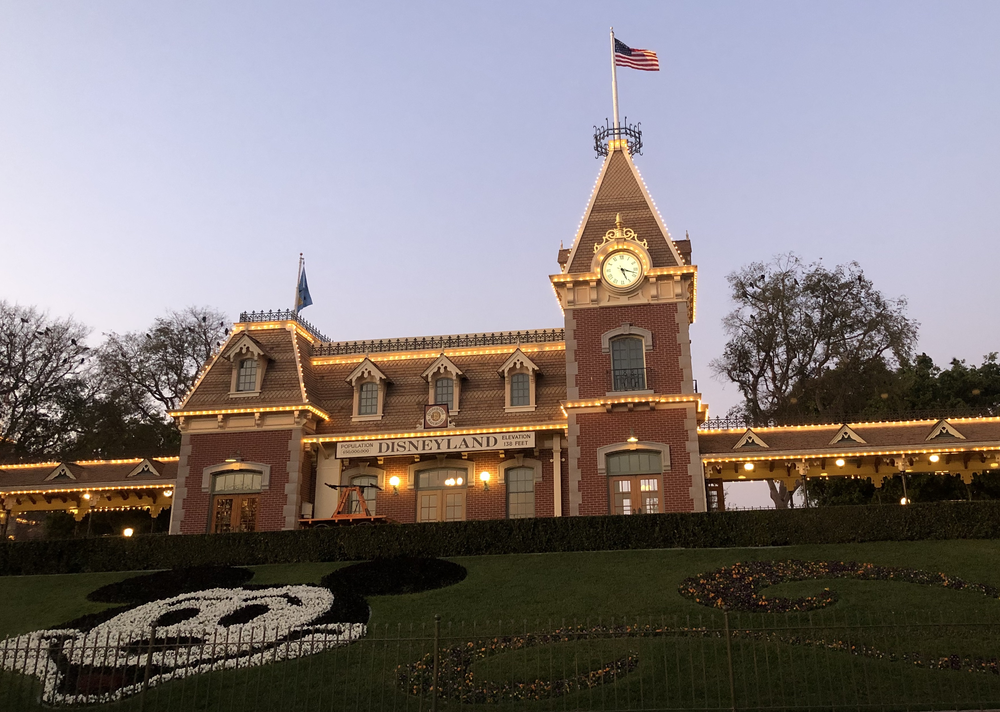

History of Disneyland

Disneyland was the first ever Disney theme park, built in 1955. When it opened, there were only 14 attractions, including a railroad, carousel, and boat ride. The rides and attractions were spread across 5 different lands: Main Street USA, Adventureland, Frontierland, Fantasyland, and Tomorrowland. Today, Disneyland has expanded to more than 50 rides, attractions, and character meet-and-greets. It has also added 4 more lands: New Orleans Square, Critter Country, Mickey's Toontown, and the most exciting, Star Wars Galaxy's Edge.
History of California Adventure

Disney's California Adventure park opened in 2001. Its theming celebrates California culture, from Hollywood to the Redwood Forest. It is home to popular thrill rides, like the Incredicoaster, the Tower of Terror, and Radiator Springs Racers, themed after the movie Cars. The Grand Californian Hotel has its own entrance into the park for hotel guests.